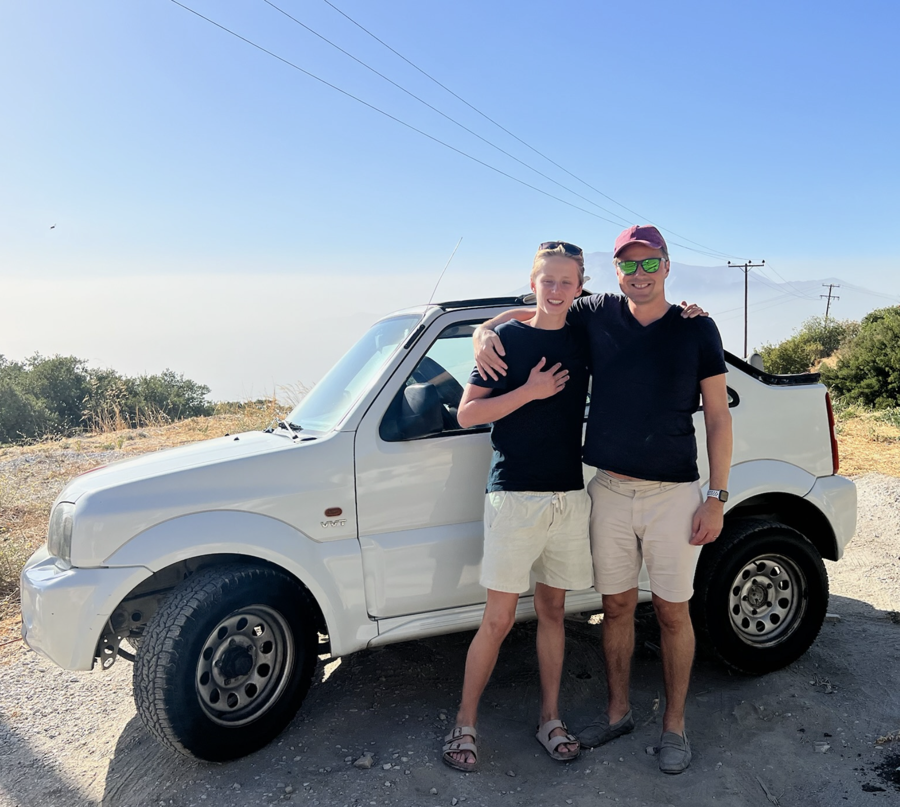
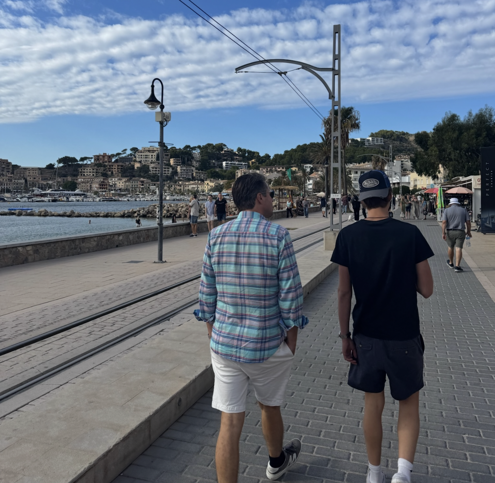
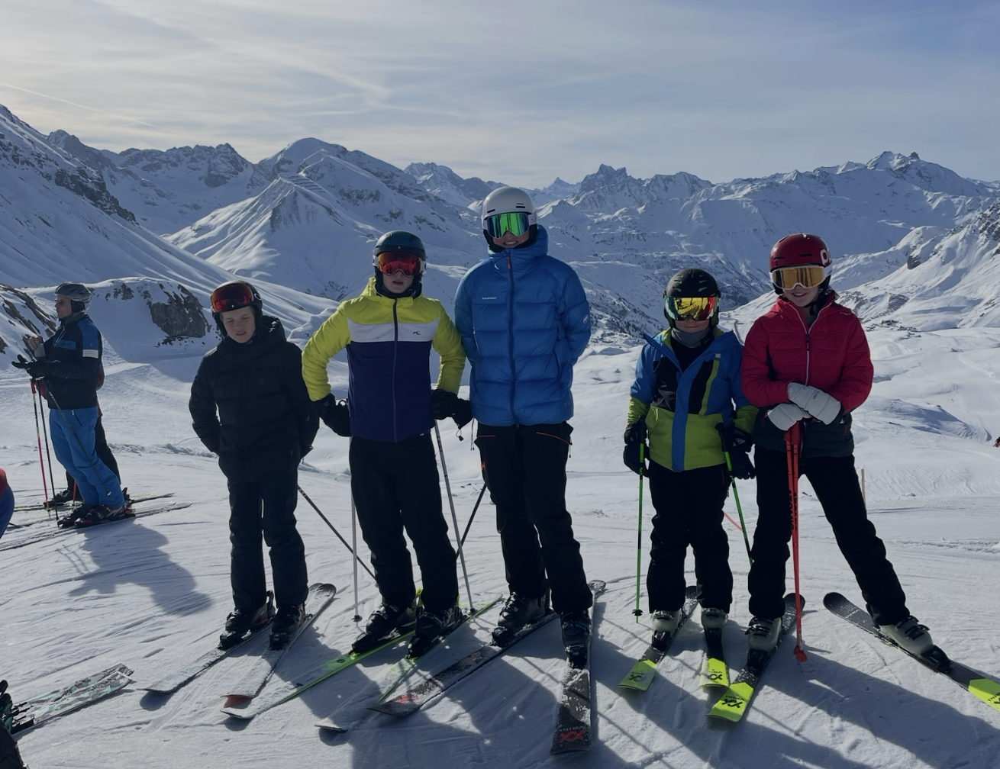
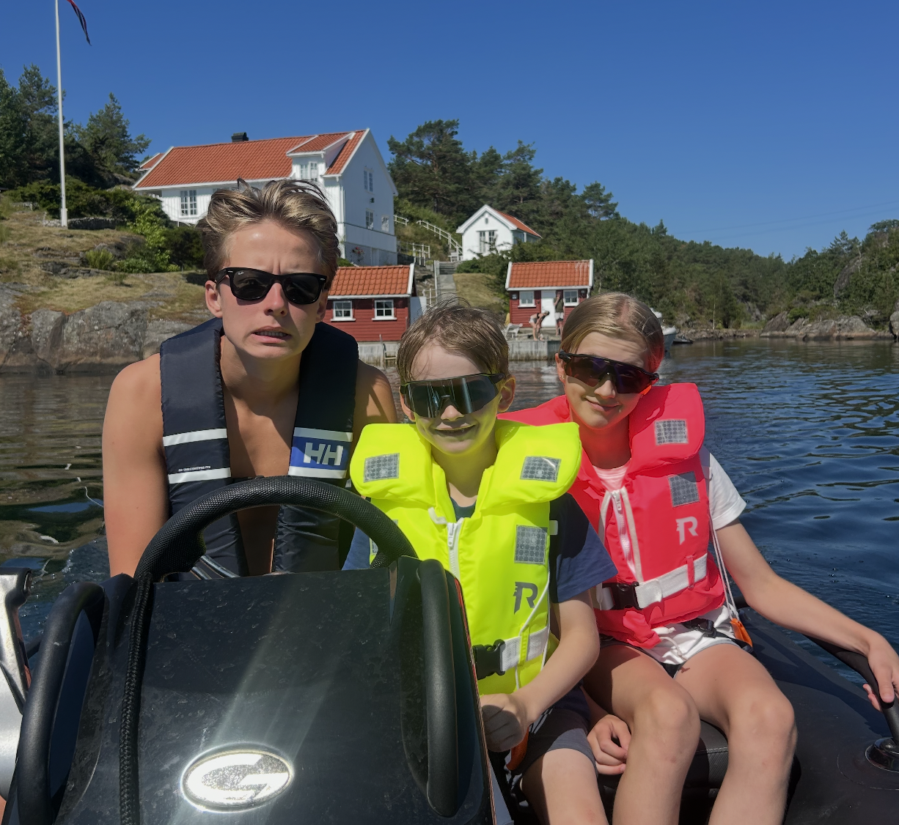

Mine ferier:
I feriene liker jeg å reise, slappe av og være med familien min. Jeg liker aller mest og dra på hytta på Sandøya, men liker og å reise til utlandet.

Jeg var på Samos i høstferien i 2024. Det var en veldig fin og rolig øy, med mye å by på. Det var en veldig avslappende og rolig ferie. Den ene dagen leide vi en gammel suzuki jimny som sleit opp alle bakker. Vi kjørte rundt øya, og fikk sett masse.

Jeg var på Mallorca forrige høstferie. Vi var ved palma, som jeg syntes var en veldig fin by. Her bada vi masse, og leie også bil en dag for å undersøke øya. Det var veldig gøy. Bildet er tatt fra Port de Soller, på nord-øst delen av øya.

Vi pleier å dra til Lech, og dette bildet er fra første gang vi var der i 2019. Det er veldig fine alpinløyper, og masse gøy å gjøre der. Det har blitt dårligere med snø de siste årene dessverre, så vi har ikke tatt sjangsen på å dra.

Vi er masse her på Sandøya. Her er det mest å gjøre, og derfor liker jeg det best. En familievenn har hytte rett ved oss, så vi finner på masse gøy. Fra vannsport til skogsykling. Her har jeg vært siden jeg var liten, og blir forhåpentligvis aldri lei.